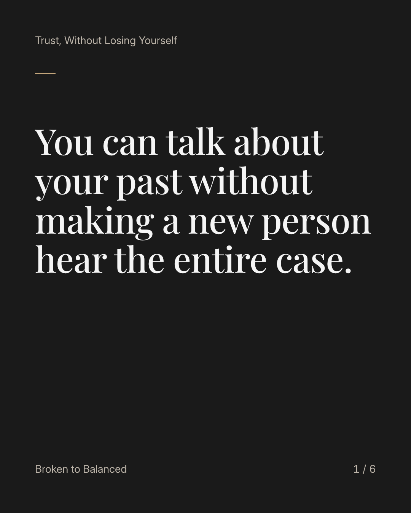
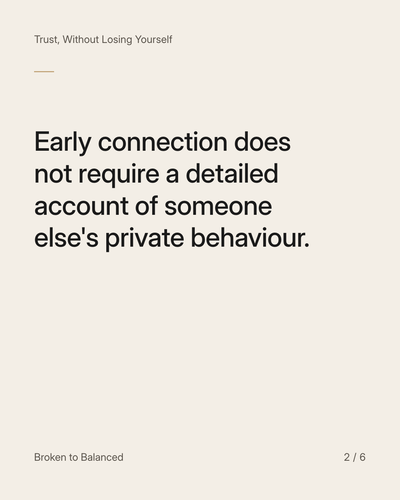
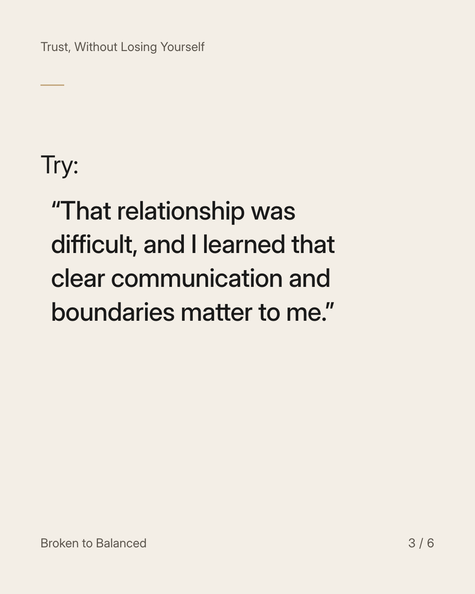
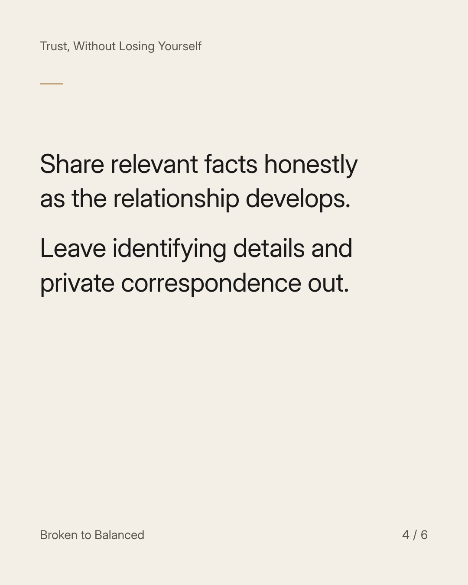
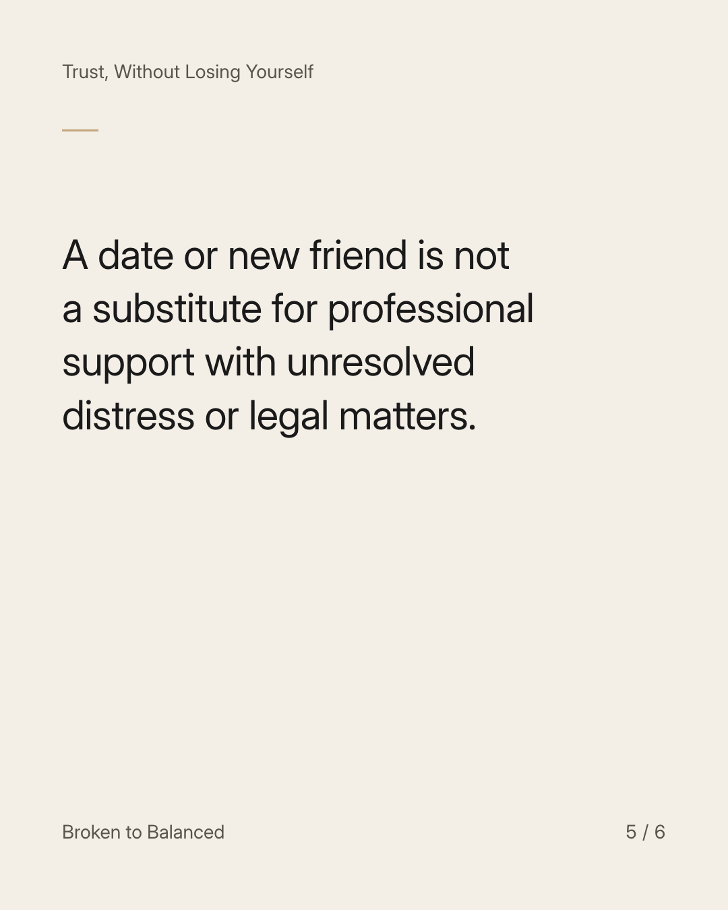
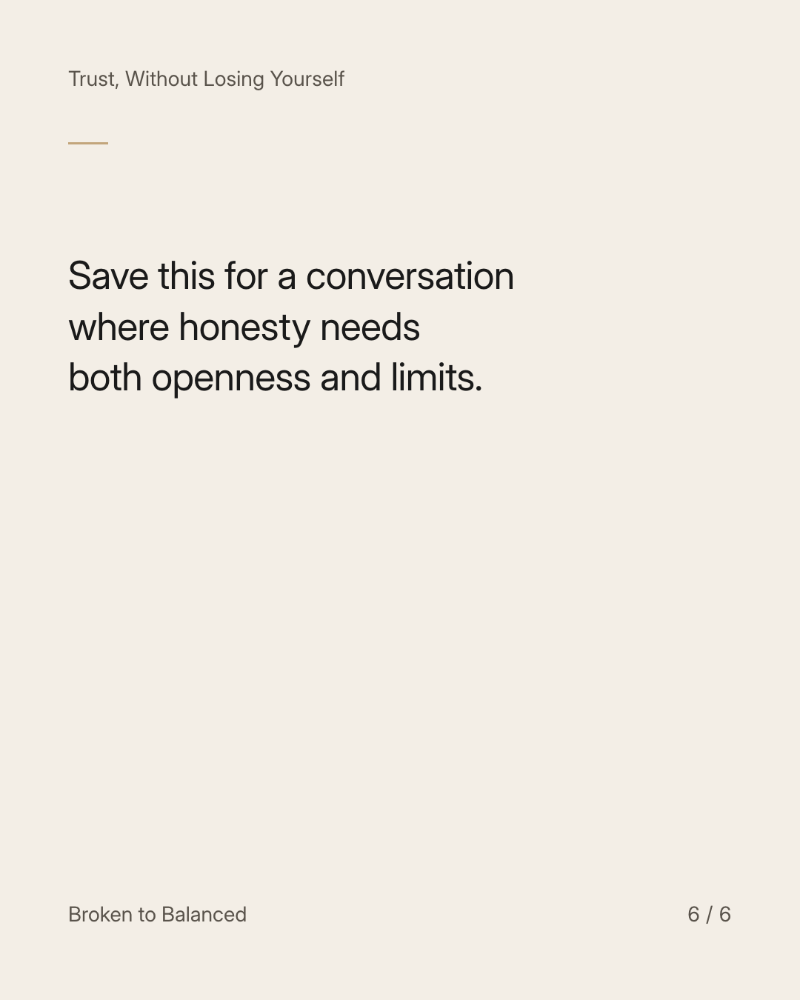

Exact text and accessibility text
You can talk about your past without making a new person hear the entire case.
Slide 1 of 6. You can talk about your past without making a new person hear the entire case.


Exact text and accessibility text
Early connection does not require a detailed account of someone else's private behaviour.
Slide 2 of 6. Early connection does not require a detailed account of someone else's private behaviour.


Exact text and accessibility text
Try: “That relationship was difficult, and I learned that clear communication and boundaries matter to me.”
Slide 3 of 6. Try: “That relationship was difficult, and I learned that clear communication and boundaries matter to me.”


Exact text and accessibility text
Share relevant facts honestly as the relationship develops. Leave identifying details and private correspondence out.
Slide 4 of 6. Share relevant facts honestly as the relationship develops. Leave identifying details and private correspondence out.


Exact text and accessibility text
A date or new friend is not a substitute for professional support with unresolved distress or legal matters.
Slide 5 of 6. A date or new friend is not a substitute for professional support with unresolved distress or legal matters.


Exact text and accessibility text
Save this for a conversation where honesty needs both openness and limits.
Slide 6 of 6. Save this for a conversation where honesty needs both openness and limits.
Exact caption
Plain-text fallback: select and copy the caption.